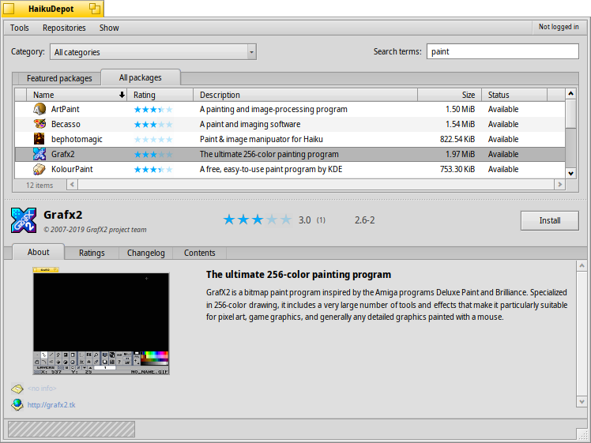

Français
Français Català
Català Deutsch
Deutsch English
English Español
Español Italiano
Italiano Magyar
Magyar Polski
Polski Português
Português Português (Brazil)
Português (Brazil) Română
Română Slovenčina
Slovenčina Suomi
Suomi Svenska
Svenska 中文 ［中文］
中文 ［中文］ Русский
Русский Українська
Українська 日本語
日本語| Index |
| Le filtre La liste La zone d'information Outils et options d'affichage Créer un compte utilisateur Noter et Commenter |
 HaikuDépôt
HaikuDépôt
| Deskbar : | ||
| Localisation : | /boot/system/apps/HaikuDepot | |
| Réglages : | ~/config/settings/HaikuDepot/
~/config/settings/HaikuDepot/main_settings ~/config/cache/HaikuDepot/ -mise en cache des icônes, des captures d'écrans, des descriptions, etc. |
HaikuDepot is the central application when it comes to managing your software packages. With it you can browse and search through package repositories and install, update and uninstall packages. By default, HaikuDepot starts up with a list of "Featured packages", software that's deemed interesting to many users.

When the checkbox is deactivated, all available packages are shown and the display changes to smaller icons and more information arranged in columns:
 Le filtre
Le filtre
Au dessus de la liste des paquets, on trouve des critères pour filtrer ceux visibles :
Le menu déroulant (catégorie) permet de limiter la liste à une catégorie, comme « Audio » ou « Jeux ».
Le champs de texte permet de filtrer la liste aux paquets qui contiennent tout les chaînes saisies (séparée par des espaces) soit dans leur nom soit dans leur description.
The checkbox to can be activated to further filter the results in the set category or of the entered search terms.
The menu of the menu bar determines which repos are being queried. "Local" packages are the ones that were installed from somewhere other than an online repo; maybe from a USB thumb drive or downloaded from some website or a package that you've built yourself.
La liste
Comme dans une fenêtre du Tracker, il est possible de choisir quels colonnes afficher avec un clic droit sur l’entête de la colonne. Un clic gauche trie la liste en fonction de la colonne. Bien sûr, il est possible de réorganiser les colonnes en les glissant vers une nouvelle position.
La colonne de statut d’un paquet peut avoir pour valeur :
: le paquet est déjà installé et prêt à être utilisé.
: The package exists in that repository and can be downloaded and installed. If there are any dependencies on other packages, you'll be informed of that while installing and get the choice of downloading/installing all that's necessary.
: Pending is shown for a package that is queued for download/installation. While a package is downloaded, the progress is shown as percentage.
: une version plus récente que celle déjà installée est disponible.
Vous pouvez attraper la ligne en pointillé entre la liste des paquets et la zone d’information pour redimensionner verticalement la liste des paquets.
La zone d'information
At the bottom is an area that displays information on the package that is currently selected in the list above it.
To the right of package name, author, rating and version is a button, that – depending on the current state of the package – lets you , or it. If a package is already installed, you'll find an additional button there to the application.
Au dessous il y a les 4 onglets À propos, Évaluations, et Journal des modifications et Contenu.
Le premier onglet comporte une description détaillée du paquet, accompagné d'une copie d'écran, une adresse de contact et l'URL de l'équipe qui maintient ce paquet logiciel, quand l'information est disponible. En cliquant sur la copie d'écran, la vignette s'ouvrira en taille réelle dans une nouvelle fenêtre
The second tab shows ratings and comments of users, if available.

To the left is a statistic, showing the number of stars (1 to 5) the package got from how many users.
In the middle are user comments with their nickname, the number of stars they gave the package and which version of the package they were rating or commenting on. You'll find more on how to rate a package yourself further down.
Le dernier onglet montre l'historique détaillé de toutes les versions du paquet qui ont été publiées jusqu'à maintenant, si le mainteneur du pacquet fournit cette information.
The last tab shows all the files and folders a package contains. This only works for already downloaded packages.
Outils et options d'affichage
In the menu at the top of the window, you'll find an item to . This will request an up-to-date list of all available packages from the repositories.
The second item is to . It opens the Repositories preferences, to add/remove or disable and enable repositories.
opens the SoftwareUpdater to search and install updated packages.
Under you can choose to also display and in the packages list. For the normal user those are of no interest and would only clutter the list. They are important, however, for people who need the libraries, headers etc. of a package to develop and compile programs depending on them.
Les deux autres éléments, ceux pour n'afficher que les et les , sont d'un plus grand intérêt.
Créer un compte utilisateur
To be able to rate a package, you need a user account at the Haiku Depot Server that serves all the packages and keeps track of ratings and user comments. You can create an account within the HaikuDepot application by clicking on the menu in the far right of the menu bar that shows your current status: . Choosing opens a window with two tabs; one to enter your user name and password (once you have those) to log in, and the other to create a new account:

Pour créer un compte vous avez besoin de :
- choisir un nom d'utilisateur, en minuscules et sans caractères spéciaux.
- définir un mot de passe long d'au moins 8 caractères avec au moins 2 majuscules et 2 chiffres
- fournir une adresse email valide (si vous avez besoin qu'un nouveau mot de passe vous soit envoyé)
- résoudre le captcha
After logging in, the top-right menu of the HaikuDepot window will now say , showing your user name. The menu now offers you to or .
Noter et Commenter
After you've created a user account and are logged in, you can rate a package and leave a comment, if you want. Just hover the mouse over the rating stars in the info area of a package and they turn into a button. Click it to open the rating window:

Here you move the mouse over the stars to light them up and choose your rating, you can also choose from a number of levels to judge the stability of the application and pick the language of your optional comment. To make a comment meaningful, you should have worked with the application you're about to rate for a while to become familiar with its features, bugs and quirks. And don't write the next great American novel... keep it short, sweet and polite. :)
After you click the data is transmitted to the server. You may have to go to the menu to before you can see your changes.
At any time, you can come back and edit your comment and re-rate it. You can also hide your rating from other users by deactivating the checkbox .